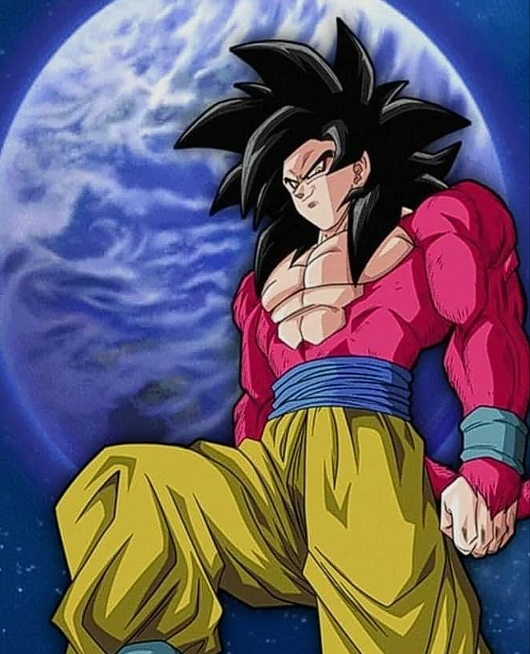

Donde se pueden ver algunos de los animes mencionados
Crunchyroll es una buena opción para anime gratuito
Ese es el caso de Crunchyroll, que tiene mucho contenido que puede verse de forma
gratuita y hasta tiene un plan de prueba gratis
Funimation
Pluto TV
Anime Lab
CONtv + Comics

Donde se pueden encontrar las figuras/juguetes mencionados
En la siguiente lista se mostrara las tiendas fisicas y en linea donde se podra comprar la figuras
OTAKU MODE
La tienda en línea de Otaku Mode nos presenta una gran cantidad de cosas relacionadas con el manga y anime que
nos van a encantar, entre las que se incluyen figuras. A diferencia de otras tiendas que vamos a ver en esta
especie de top; en Otaku Mode nos encontraremos información, su tienda, evidentemente, noticias y fotos de la
cultura japonesa.
TOKYO TOYS
Tokyo Toys no solo cuenta con una increíble variedad de figuras de anime y manga, también nos encontraremos un
apartado repleto de cosas relacionadas con el mundo de los videojuegos.
OTAKU HYPE
En el caso de Otaku Hype, estamos hablando de una empresa familiar que comenzó en 2015, con raíces muy humildes,
logro crecer de manera impresionante. Con una tienda completa, con una enorme cantidad de figuras de anime
oficiales importadas de Japón. Sus propietarios afirman que llevan 15 años en el mundo del manga y del anime,
demostrando en su tienda que tienen experiencia en el tema. El pequeño detalle es que únicamente envían en Reino
Unido.
AMAZON
Evidentemente, no podíamos dejar de lado al gigante de internet. Honestamente, recomendamos apoyar a las tiendas
independientes de figuras de anime japonesas. Aunque en algunas ocasiones la manera más sencilla de adquirir algo
es gracias a Amazon, esto ya será decisión de cada uno. Como podremos apreciar a través de este enlace,
encontraremos una gran variedad disponible.
LUNAR TOY STORE
Con sede en Nueva York, se trata de una tienda independiente muy completa ¡Te va a encantar Lunar Toy Store!
Para quienes vivan en EE. UU. Encontrarán una tarifa de envío de $5. Con un sistema moderno ideal para cualquiera
que esté acostumbrado a adquirir productos en línea. La gran diferencia con otras tiendas es que vende
suministros para algunos hobbies o pasatiempos. Entre los que se incluyen diferentes herramientas y latas de
pinturas para nuestras creaciones.
Donde se pueden ver estas Peliculas
Las peliculas se pueden ver en distintas plataformas, al igual que los animes, pero solo con una diferencia que estas
se pueden ver ademas en youtube
YouTube
Funimation
Pluto TV
Anime Lab
CONtv + Comics
Facebook
En el siguiente link podran encontar mas informacion hacerca de las Transformaciones y simbolos